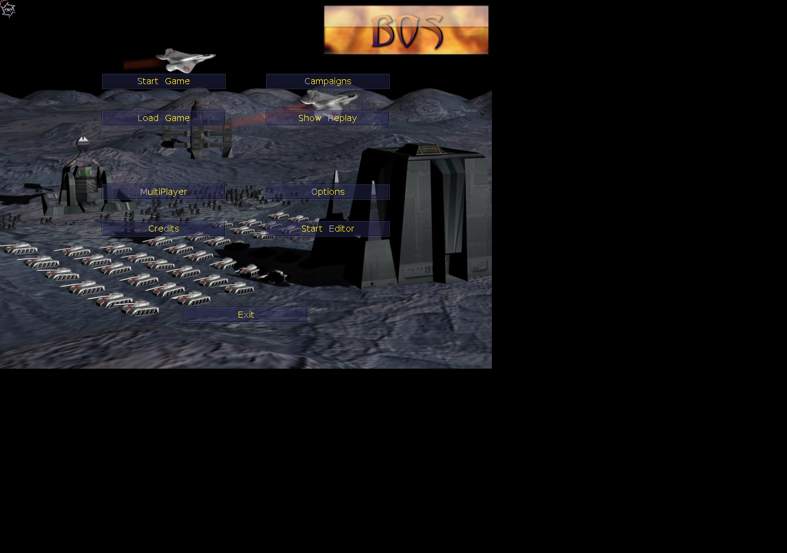

QA Status
PARTIAL
Reached Bos Wars menu/skirmish screen with nonblank screenshot.
Latest report: qa/reports/public-package-smoke/boswars-lan-20260619T151926Z
A compact real-time strategy game with base building, resources, units, and AI skirmish potential.
Native RTS - Base Building - Strategy,RTS,Native

PARTIAL
Reached Bos Wars menu/skirmish screen with nonblank screenshot.
Latest report: qa/reports/public-package-smoke/boswars-lan-20260619T151926Z
Cached from Debian packages onto the NFS-backed native shelf. Seed packages: boswars, boswars-data.
Small open-source RTS cached from Debian packages with partial no-internet menu/skirmish smoke.
Package docs were inspected on the VM. PDF manuals are checked with Poppler when present.